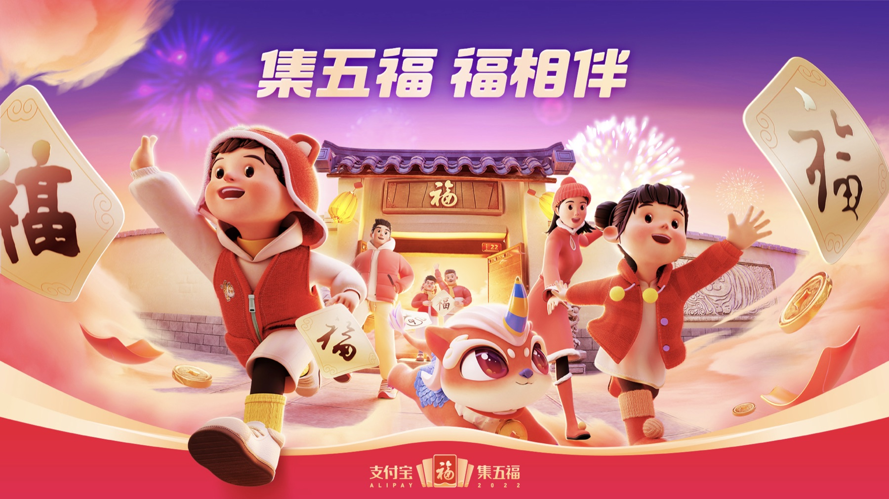
National Festival IP / Alipay Wufu
让春节 IP 从一次活动，沉淀为长期品牌资产。
支付宝「五福」是一个长期陪伴国民春节情绪的品牌 IP。项目需要在每年更新主题和玩法的同时，保持清晰的品牌连续性，让用户一眼识别、愿意参与，并在不同媒介和场景中稳定传播。
01 / IP System
五福不是单次营销视觉，而是一套需要持续运营的春节品牌系统。
面对全国级用户参与规模，视觉系统必须同时具备“年味、亲和、可复制、可延展”的能力。它既要能承载年度主题，也要能沉淀为支付宝长期可识别的春节资产。
因此项目从品牌 IP 的连续性出发，围绕角色、场景、图形、物料和传播节奏建立视觉规则，让每一次更新都不是重新开始，而是在既有资产上继续生长。
连续性
让用户在不同年份、不同入口、不同媒介中都能识别“五福”的核心气质。
参与感
视觉不是只负责好看，而是帮助活动机制被理解、被分享、被再次参与。
节庆感
在数字产品体验中保留春节的热闹、温度和情绪记忆。
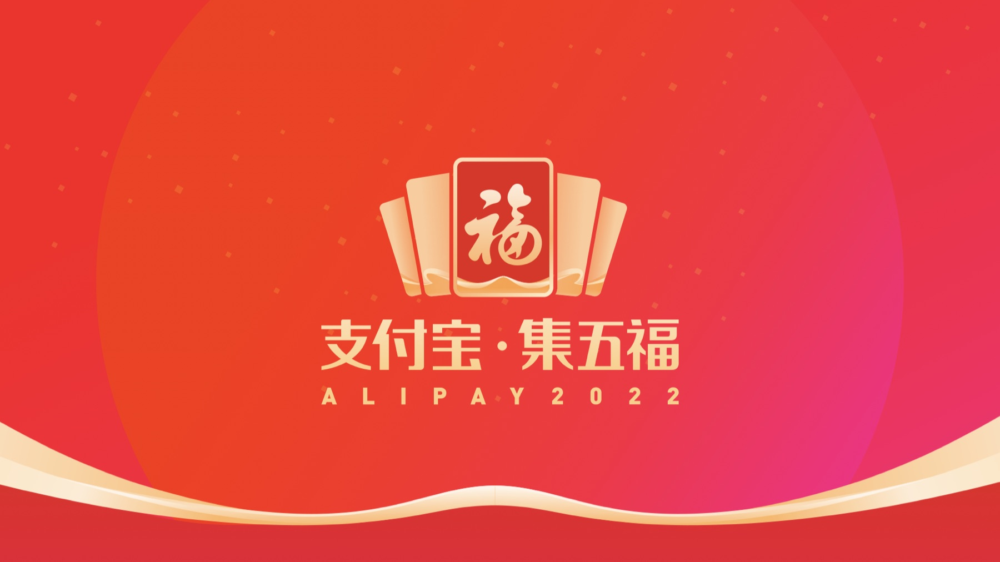
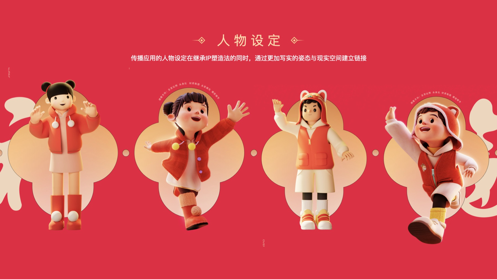
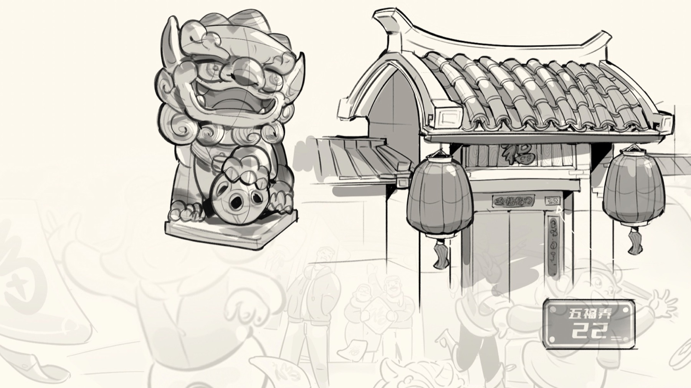
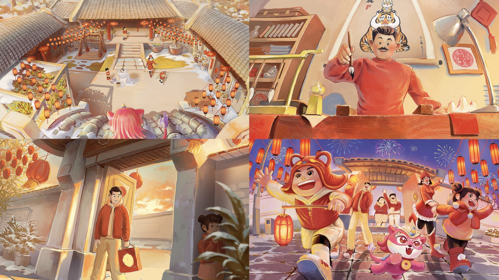
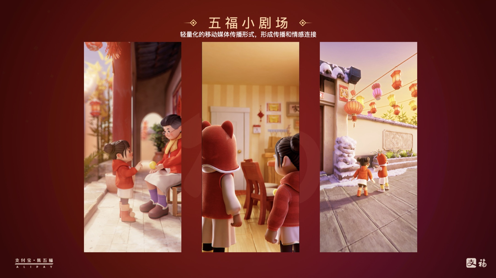
02 / Assets & Materials
让 IP 资产进入红包、卡片、装置、礼品与社交传播的每一个触点。
五福的难度不在于做一张漂亮海报，而在于同一套品牌资产要进入高频数字界面、社交分享、线下互动、礼品衍生和活动物料中，并保持统一而不单调。
通过模块化的视觉资产管理，角色、图形和节庆元素可以被快速组合，适配多种尺寸、媒介和协作团队，支撑全国级项目的高强度落地。
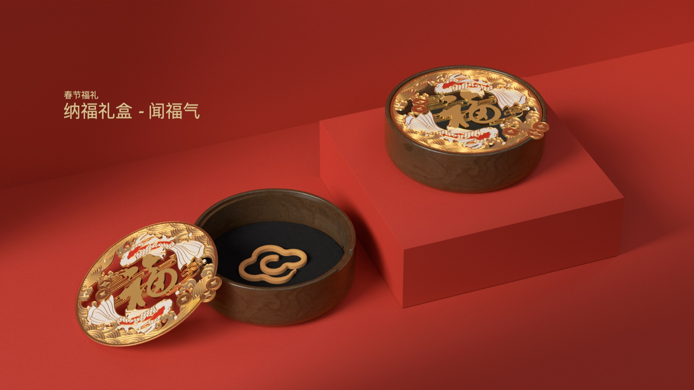
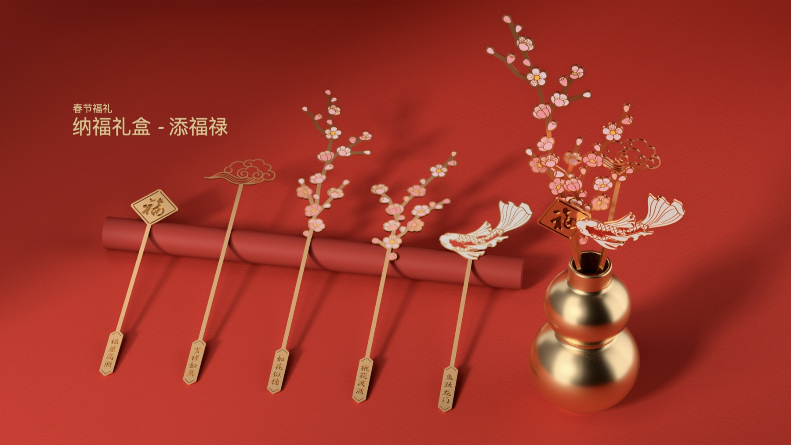
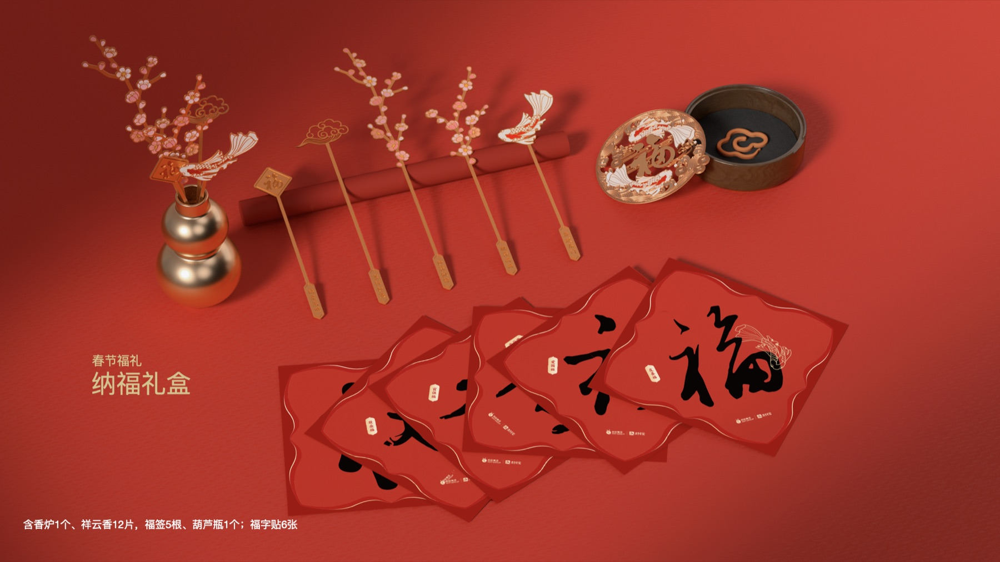
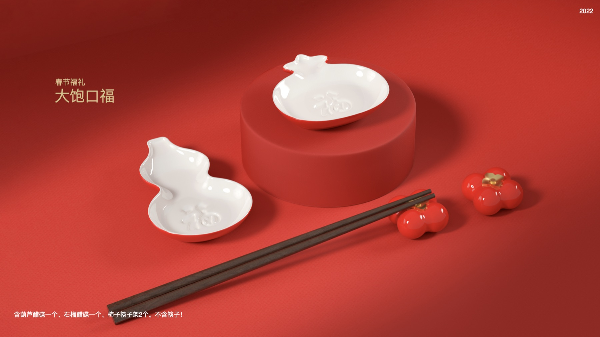
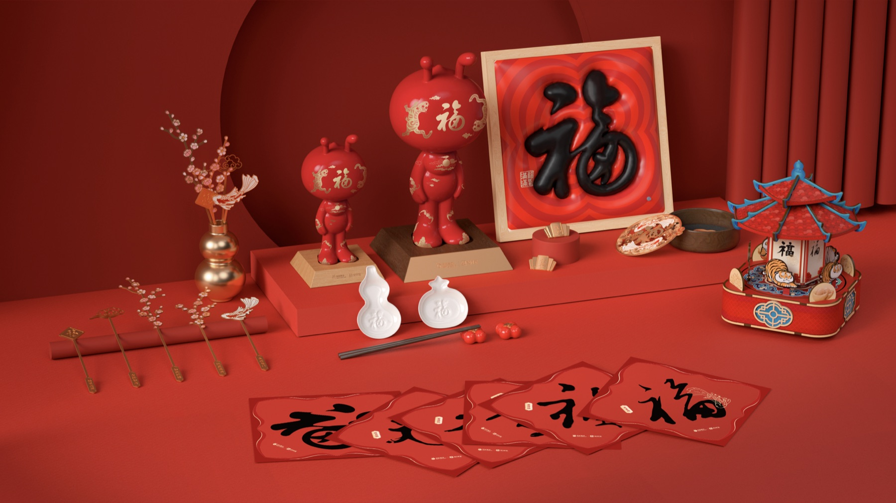
03 / Campaign Landing
全国级 IP 的价值，最终体现在它能否跨媒介稳定落地。
从线上主会场到线下装置，从传播海报到活动现场，五福需要在不同空间和媒介里保持统一识别。视觉系统因此成为协同工具，让设计、运营、市场和外部合作方拥有共同的执行语言。
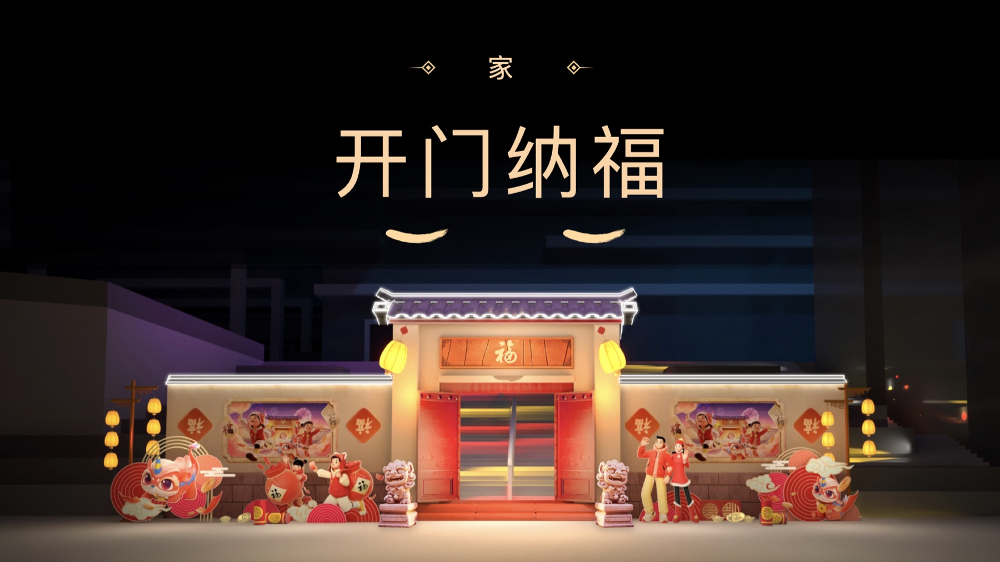
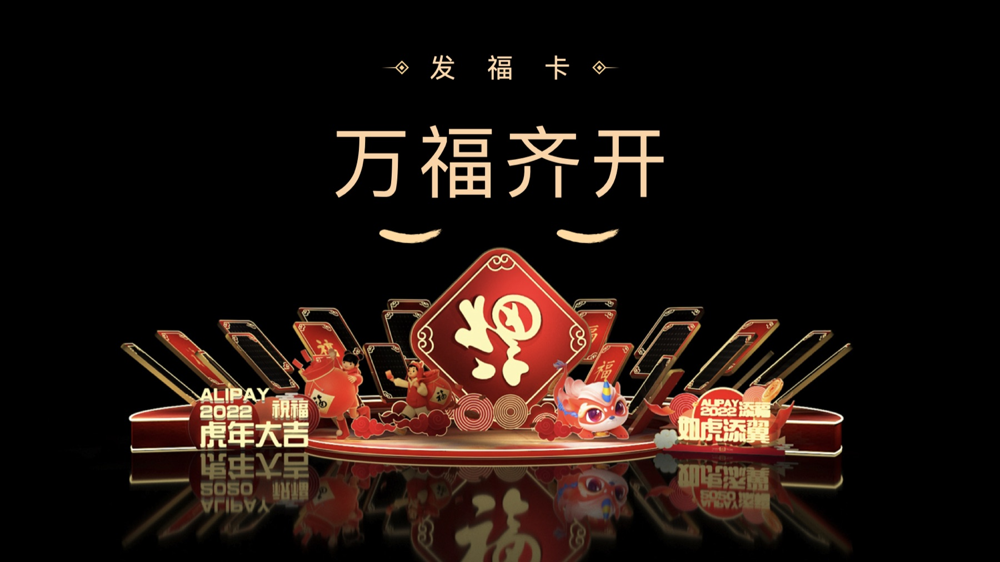
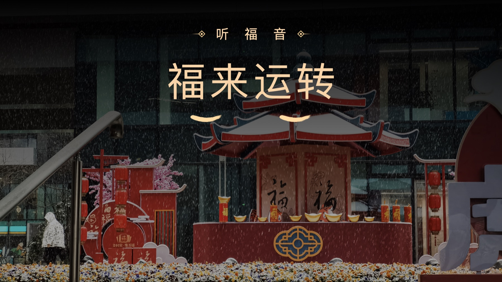
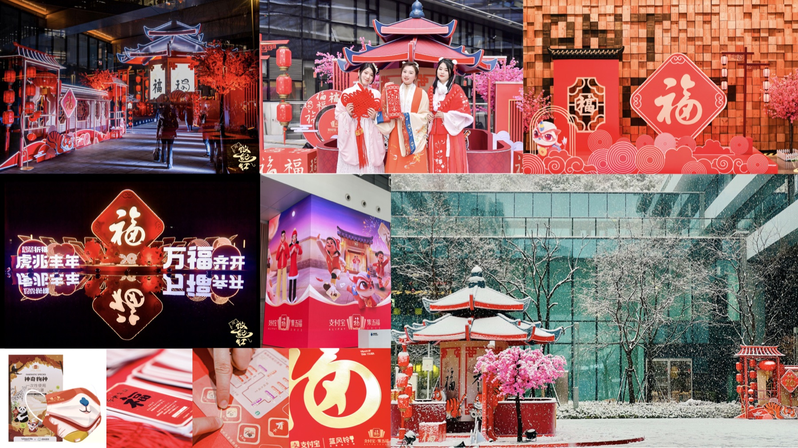